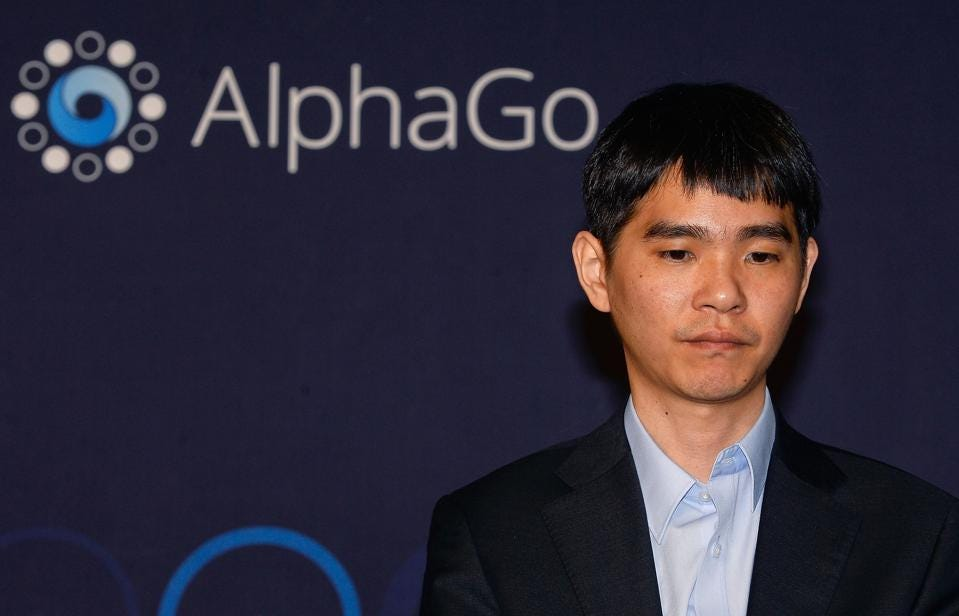

GENERAL
AlphaGo este un sistem de inteligență artificială dezvoltat de compania Google DeepMind,
care a devenit celebru pentru capacitatea sa de a învinge campionii de Go. În acest eseu,
vom explora dezvoltarea, funcționarea și impactul AlphaGo asupra lumii jocurilor de societate
și a dezvoltării inteligenței artificiale.
Dezvoltarea AlphaGo a început în anul 2014, când Google a achiziționat compania britanică DeepMind,
care era deja cunoscută pentru cercetarea în domeniul inteligenței artificiale. Obiectivul dezvoltatorilor
AlphaGo era de a crea un sistem de inteligență artificială care să poată învăța să joace Go, un joc de
societate chinezesc extrem de complex, cu o varietate mare de mișcări posibile. În ianuarie 2016, AlphaGo
a reușit să învingă pe unul dintre cei mai buni jucători de Go din lume, Lee Sedol, într-un meci de 5 partide.
MOD DE FUNCTIONARE / UTILIZARE
Funcționarea AlphaGo este bazată pe învățarea automată, rețelele neuronale
și algoritmi de căutare. Înainte de a învăța să joace Go, AlphaGo a fost instruit
să recunoască modele și să identifice care sunt cele mai bune mișcări în diferite situații.
Acest proces a fost realizat cu ajutorul a două rețele neuronale: o rețea de convoluție,
care a fost instruită să identifice modelele în jocul de Go, și o rețea de politici, care
a fost instruită să identifice cele mai bune mișcări.
Ulterior, AlphaGo a fost instruit să joace împotriva altor sisteme de inteligență artificială,
precum și împotriva unor jucători umani, pentru a-și perfecționa abilitățile.
IMPACT
Impactul AlphaGo asupra lumii jocurilor de societate și a dezvoltării inteligenței
artificiale a fost imens. După victoria istorică împotriva lui Lee Sedol, AlphaGo a
devenit un subiect de discuție global.
Acest eveniment a atras atenția asupra capacităților avansate ale modelelor de învățare profundă
și a făcut ca multe companii și organizații să investească mai mult în cercetarea inteligenței artificiale.
În plus, AlphaGo a fost utilizat și în alte domenii, precum medicina, pentru a ajuta la identificarea
celulelor canceroase în imagini medicale.
